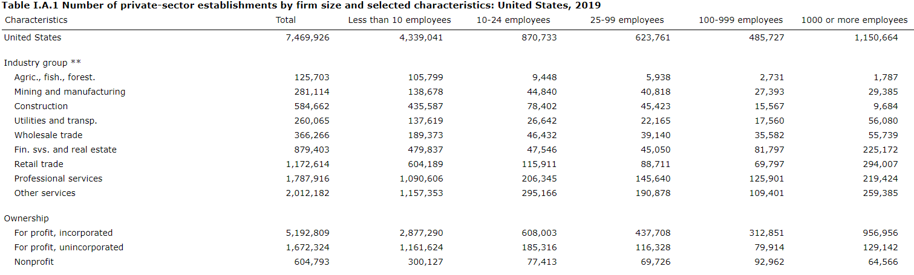

Josh Fangmeier
About Me
health policy, data, sports, et cetera
Categories
All
(7)
Medicare
(1)
bar chart race
(1)
basketball
(1)
claims
(1)
college football
(1)
databases
(1)
education
(1)
fivethirtyeight riddler
(2)
geospatial
(2)
gganimate
(1)
gt
(1)
health care
(1)
marathons
(1)
polite
(1)
rayshader
(1)
running
(1)
rvest
(1)
webscraping
(1)
Exploring the Oddities of Public School Districts
11 min
geospatial
education
Oct 1, 2022
Introducing the claimsdb package for teaching and learning
10 min
health care
claims
Medicare
databases
Feb 12, 2022

Politely Scraping Health Insurance Data
24 min
webscraping
rvest
polite
gganimate
gt
Nov 28, 2020
FiveThirtyEight Riddler Challenge: Can You Find The Fish In State Names?
1 min
fivethirtyeight riddler
May 25, 2020
Rayshading the Big Sur Marathon
14 min
rayshader
running
marathons
geospatial
May 24, 2020
College Football Bar Chart Races
10 min
college football
bar chart race
Jul 17, 2019
FiveThirtyEight Riddler Challenge: ‘’Transitive Champions’’
6 min
fivethirtyeight riddler
basketball
Apr 14, 2019
No matching items